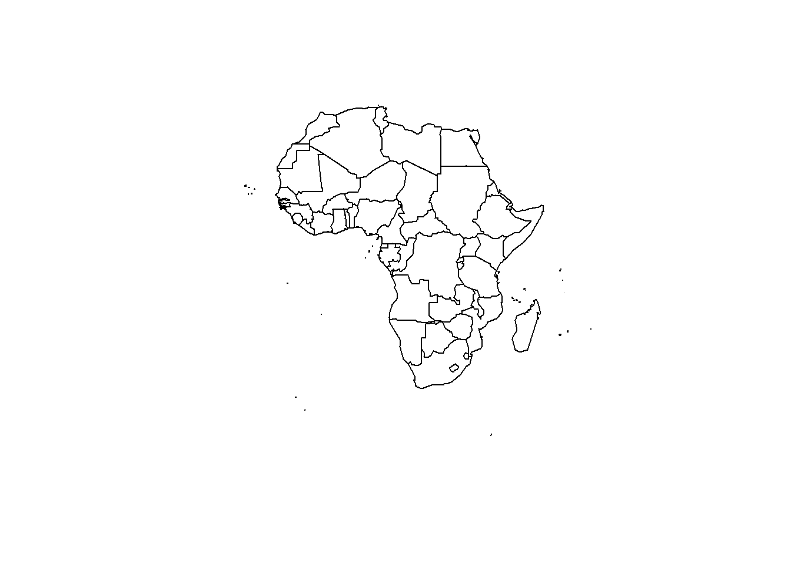
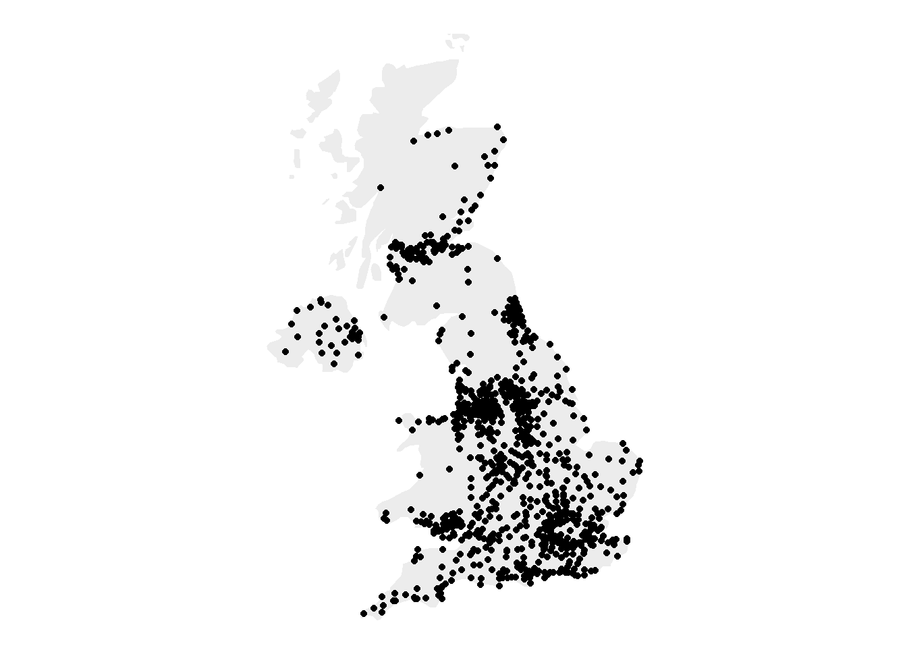
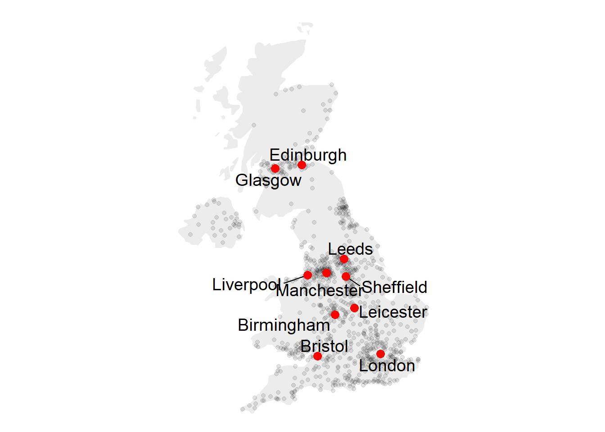
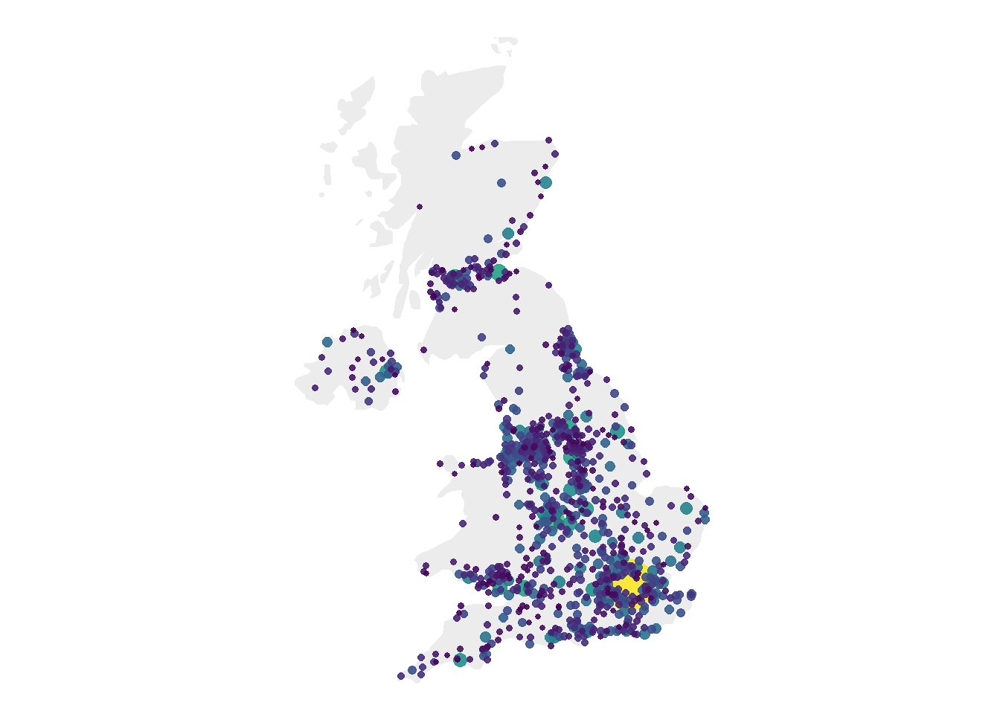
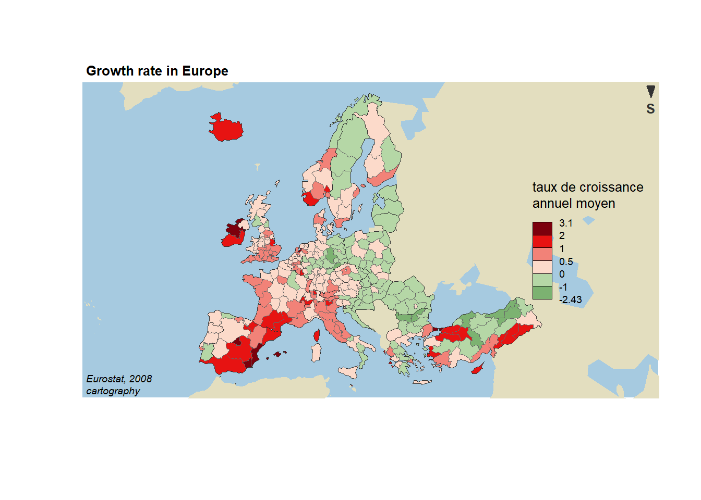
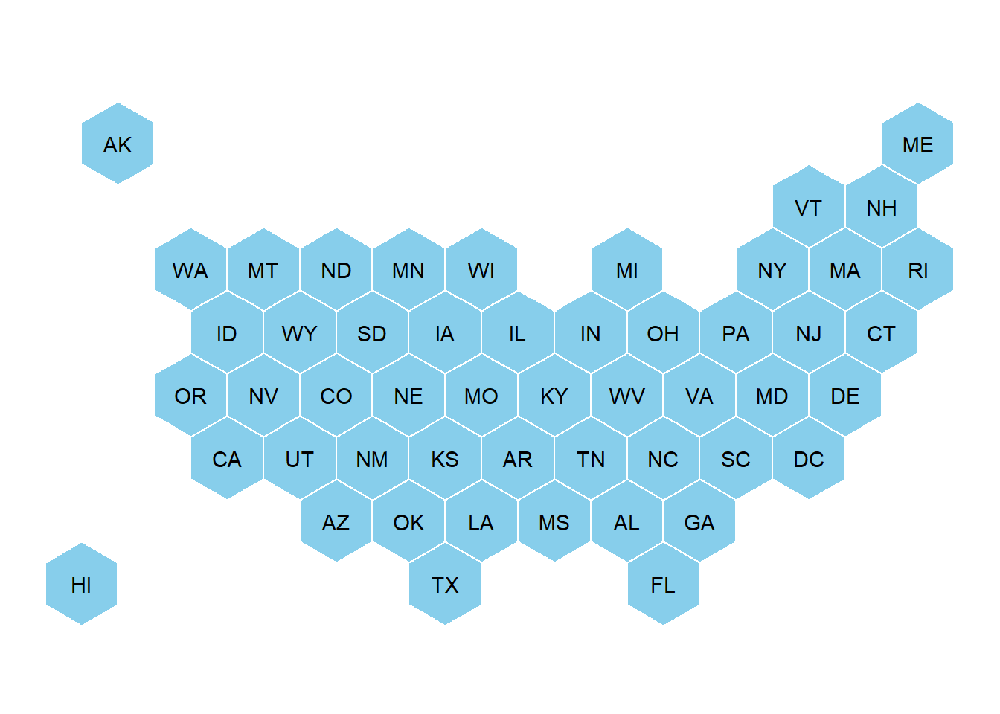
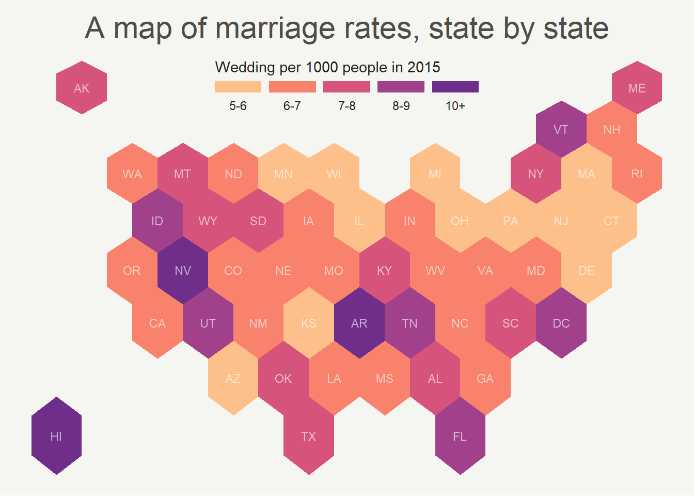
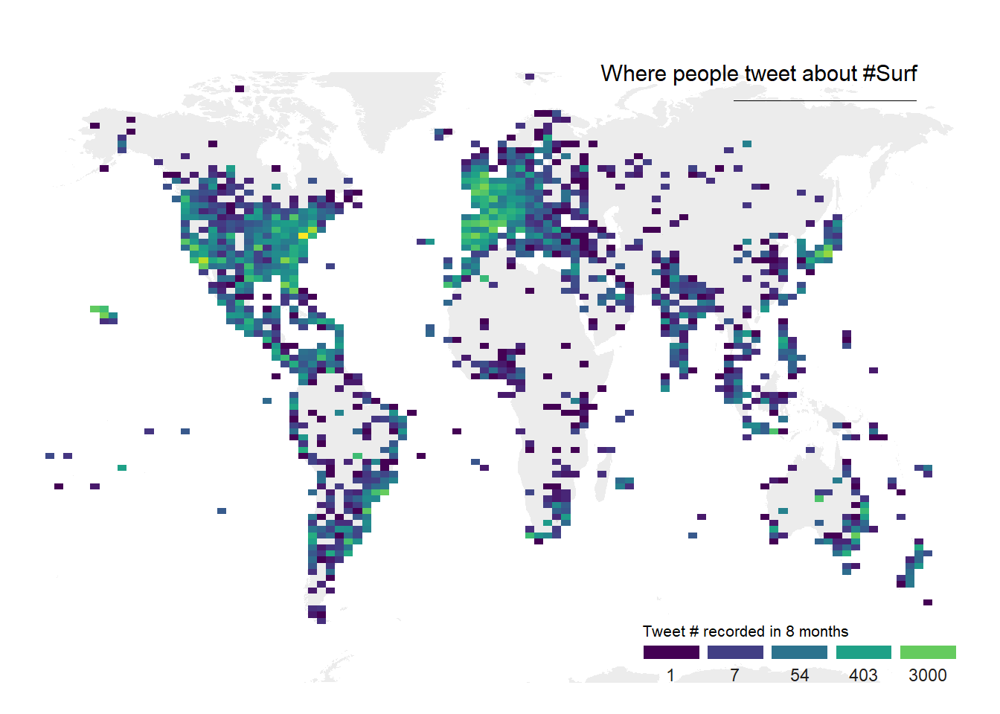
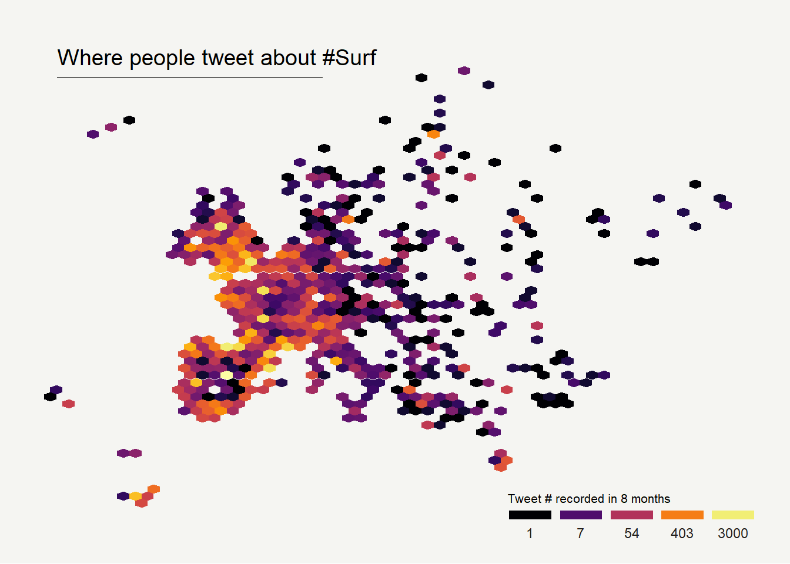

Chapter 7 Map

Figure 7.1: Connection Map
7.1 Basic Map
This section is a very basic introduction to the leaflet R package. It shows how to display a background map using default parameters, with reproducible code provided.
7.1.1 Background map in R
This is the background map section of the gallery. It explains how to build static and interactive maps based on different input data, but does not explain how to plot data on it. See other sections for that: Choropleth, bubble map, connection map or cartogram.
7.1.1.1 Input Format and Package Overview
R is an great tool for geospatial data analysis. Heaps of dedicated packages exist. Building a map follows those 2 steps:
Find data, load it in R: region boundaries can be stored in shapefiles or geoJSON files. Some R libraries also provide the data for the most common places. It is also possible to use google map style backgrounds.
Manipulate and plot it: once geo data are loaded in R you get a geospatial object that has specific features. You can manipulate it and plot it with packages like sp or ggplot2

7.1.2 Most Basic Background Map with R and Leaflet
This post is a very basic introduction to the leaflet R package. It shows how to display a background map using default parameters, with reproducible code provided.
First initiate the map with the leaflet() function. Then add tiles with addTiles(). Note the use of the %>% operator to “pipe” functions. Here you can see how to get the same result using or not this operator.
By default, you get the map beside. See next charts to learn how to zoom on a zone, change background style.
# Load the library
library(leaflet)
# Note: if you do not already installed it, install it with:
# install.packages("leaflet")
# Initialize the leaflet map with the leaflet() function
m <- leaflet()
# Then we Add default OpenStreetMap map tiles
m <- addTiles(m)
m
# Same stuff but using the %>% operator
m <- leaflet() %>%
addTiles()
m
# save the widget in a html file if needed.
# library(htmlwidgets)
# saveWidget(m, file=paste0( getwd(), "/HtmlWidget/backgroundMapBasic.html"))7.1.3 Change Background Tile with leaflet and R
This section shows how to change the background tile used by the leaflet R package. It provides an overview of the most common options with their associated code.
7.1.3.1 Loading a tile
This post follows the previous posts on leaflet: most basic map, and zooming on a specific area.
Leaflet offers several tiles to customize the background used on a map.
A tile can be loaded thanks to the addProviderTiles() function.
# Load the library
library(leaflet)
# Note: if you do not already installed it, install it with:
# install.packages("leaflet")
# Background 1: NASA
x <- leaflet() %>%
addTiles() %>%
setView( lng = 2.34, lat = 48.85, zoom = 5 ) %>%
addProviderTiles("NASAGIBS.ViirsEarthAtNight2012")
x
# save the widget in a html file if needed.
#library(htmlwidgets)
#saveWidget(x, file=paste0( getwd(), "/NASAGIBS.html"))7.1.3.2 List of Tiles
Many tiles are made available. A complete list can be found here. Most famous are probably:
Nasa: NASAGIBS.ViirsEarthAtNight2012
Google map: Esri.WorldImagery
Gray: Esri.WorldGrayCanvas
Terrain: Esri.WorldTerrain
Topo Map: Esri.WorldTopoMap
# Background 2: World Imagery
m <- leaflet() %>%
addTiles() %>%
setView( lng = 2.34, lat = 48.85, zoom = 3 ) %>%
addProviderTiles("Esri.WorldImagery")
m
# save the widget in a html file if needed.
#library(htmlwidgets)
#saveWidget(m, file=paste0( getwd(), "/Esri.html"))7.1.4 The ggmap Package for Static Maps with Background Titles
The ggmap library makes it easy to retrieve raster map tiles from popular online mapping services like Google Maps, OpenStreetMap or Stamen Maps, and plot them using the ggplot2 framework. It produces static maps like these. Click on an image to get the related code snippet.
The ggmap package produces static maps. This section describes its basic utilisation, just building background maps. Other section are available for adding data on it, like bubble maps or chloropleth maps. The section is split in 2 parts: tiles coming from google and others coming from Stamen.
7.1.4.1 Building a Google Background
The get_googlemap() function allows to get google map tiles. Unfortunately, google now requires to sign up for an API keys for this code to work.
# Library
library(ggmap)
# For google map, you have to give the center of the window you are looking at.
# Possibility for the map type argument: terrain / satellite / roadmap / hybrid
# get the map info
map <- get_googlemap("Montpellier, France", zoom = 8, maptype = "terrain")
# Plot it
ggmap(map) +
theme_void() +
ggtitle("terrain") +
theme(
plot.title = element_text(colour = "orange"),
panel.border = element_rect(colour = "grey", fill=NA, size=2)
)


7.1.5 Calling Stamen Background
Using the same kind of code you can call stamen background. Just switch to the get_stamenmap() function.
The most famous background is probably the watercolor one.
# Library
library(ggmap)
library(gridExtra)
# For stamen map, you have to give the extremity of the window you are looking at. here is an example with the watercolor background (Around brisbane)
map <- get_stamenmap( bbox = c(left = 110, bottom = -40, right = 160, top = -10), zoom = 4, maptype = "watercolor")
ggmap(map) +
theme_void() +
theme(
plot.title = element_text(colour = "orange"),
panel.border = element_rect(colour = "grey", fill=NA, size=2)
)
Let’s have a look to all the possibilities offered by this Stamen option:
# Library
library(ggmap)
library(gridExtra)
# Let's check all the possibilities offered by stamen
maptype <- c("terrain-labels", "terrain-lines", "toner", "toner-2011",
"toner-background", "toner-hybrid", "toner-lines",
"toner-lite", "watercolor")
mylist <- vector("list", length(maptype))
# Loop through them:
num <- 0
for(i in maptype ){
num <- num+1
map <- get_stamenmap( bbox = c(left = 150, bottom = -30, right = 160, top = -25), zoom = 8, maptype = i)
p <- ggmap(map) +
theme_void() +
ggtitle(i) +
theme(
plot.title = element_text(colour = "orange"),
panel.border = element_rect(colour = "grey", fill=NA, size=2)
)
mylist[[num]] <- p
}
# Arrange all this map in the same image with gridExtra:
n <- length(mylist)
nCol <- floor(sqrt(n))
do.call("grid.arrange", c(mylist, ncol=nCol))
7.1.6 The Maps, Mapdata and Oz Packages to get Most Common Boundaries
A few libraries provide the most common spatial objects. It avoids the struggle to find the information somewhere on the web. Maps library: Canada, France, Italy, USA and its regions, world cities, NZ. Mapdata library (China, Japan, NZ, World in High resolution) and the oz library (Australia).
The maps, mapdata and oz packages provide the boundaries of the most common world regions like the US, Europe, New Zealand and more. This section describes how to use them to avoid struggling finding input data.
7.1.6.1 maps Package
The maps package is the best source of geospatial data in R. The whole list of offered data is available typing: help(package='maps').
It includes:
- World:
world,world.cities,lakes - US:
states,county,state,usa
- France:
france - Italy:
italy - New Zealand:
nz
The code below shows how to use one of this geospatial object.
# Load library
library(maps)
# Check all available geospatial objects:
# help(package='maps')
# Map of the world:
map('world',col="grey", fill=TRUE, bg="white", lwd=0.05, mar=rep(0,4),border=0, ylim=c(-80,80) )
7.1.7 mapdata Package
The mapdata package extends the maps package with more geospatial datasets:
chinajapan- Other world versions like pacific Centric (
world2Hires)
See complete list with help(package='mapdata')
# Load library
library(mapdata)
# Check all available geospatial objects:
# help(package='mapdata')
# Map of Japan:
map('japan',col="black", lwd=1, mar=rep(0,4) )
7.1.8 oz Package
The oz package provides several geospatial object concerning Australia. Plot the general country using the oz() function, or states using nsw(), qld() and so on.
Type help(package='oz') for documentation.
# Load library
library(oz)
# Check all available geospatial objects:
# help(package='oz')
# Map of Australia
par(mar=rep(0,4))
oz( states=TRUE, col="#69b3a2")
7.1.9 Rgdal and Geojsonio to Read Shapefiles and .geojson Files
If you are not satisfied with the previous options, you can search the web to find the spatial object you need. This information will most likely be stored under on of those 2 formats:
- shape file: can be read with the
rgdalpackage as described here. - geojson file: can be read with
geojsonioas explained here.
7.1.9.1 Open and Plot Shapefiles in R
Shapefiles are a common way to store geospatial data. This section explains how to read it with R and the rgdal package, and how to plot it in base R or with ggplot2.
If you did not find the geospatial data you need in existing R packages (see the map section), you need to find this information elsewhere on the web.
Usually, you will find it as a shape file format. This format is composed by several files that you need to keep together in the same folder.
Note: if you found a .geoJSON file, read this section instead.
7.1.10 Find and Download a Shapefile
You need to dig the internet to find the shape file you are interested in. For instance, this URL will redirect you to a zipped shape file containing the world boundaries.
You can download it and unzip it with R:
# Download the shapefile. (note that I store it in a folder called DATA. You have to change that if needed.)
download.file("http://thematicmapping.org/downloads/TM_WORLD_BORDERS_SIMPL-0.3.zip" , destfile="DATA/world_shape_file.zip")
# You now have it in your current working directory, have a look!
# Unzip this file. You can do it with R (as below), or clicking on the object you downloaded.
system("unzip DATA/world_shape_file.zip")
# -- > You now have 4 files. One of these files is a .shp file! (TM_WORLD_BORDERS_SIMPL-0.3.shp)7.1.11 Read it with rgdal
The rgdal package offers the readOGR() function that allows to read shapefile using the following syntax.
As a result you get a geospatial object (my_spdf here) that contains all the information we need for further mapping. Please try th following command to understand how this object works:
summary(my_spdf): tells you the max and min coordinates, the kind of projection in use.length(my_spdf): how many regions you have.head(my_spdf@data): the firs few rows of the data slot associated with the regions.
# Read this shape file with the rgdal library.
library(rgdal)
my_spdf <- readOGR(dsn=path.expand("C:/Users/Downloads/Files/World-Shapefiles"), layer="TM_WORLD_BORDERS_SIMPL-0.3")7.1.12 Plot it with base R
The basic plot() function knows how to plot a geospatial object. Thus you just need to pass it my_spdf and add a couple of options to customize the output.
# Basic plot of this shape file:
par(mar=c(0,0,0,0))
plot(my_spdf, col="#f2f2f2", bg="skyblue", lwd=0.25, border=0 )
7.1.13 Plot it with ggplot2
It is totally possible (and advised imo) to build the map with ggplot2. However, ggplot2 takes as input data frames, not geospatial data.
my_spdf thus needs to be transformed using the tidy() function of the broom package. The region argument of this function expect one of the column name if the (data?) slot. It will be the region name in the new dataframe.
Once the data frame is created, it is plotted using the geom_polygon() function as described below.
# 'fortify' the data to get a dataframe format required by ggplot2
library(broom)
spdf_fortified <- tidy(my_spdf, region = "NAME")
# Plot it
library(ggplot2)
ggplot() +
geom_polygon(data = spdf_fortified, aes( x = long, y = lat, group = group), fill="#69b3a2", color="white") +
theme_void() 
7.1.14 Open and Plot Geojson files in R
Geojson files are a common way to store geospatial data. This section explains how to read it with R and the geojsonio package, and how to plot it in base R or with ggplot2.
If you did not find the geospatial data you need in existing R packages (see the map section), you need to find this information elsewhere on the web.
It will often be stored as a .geomJSON format. This section explains how to read it.
Note: if you found a shapefile, read this section instead.
7.1.15 Find and download a .geoJSON file
You need to dig the internet to find the geoJSON file you are interested in. For instance, this URL provides a file containing french region boundaries.
You can load it in R with:
# Let's read the jeoJson file that is stored on the web with the geojsonio library:
library(geojsonio)
spdf <- geojson_read("https://raw.githubusercontent.com/gregoiredavid/france-geojson/master/communes.geojson", what = "sp")That’s it! You now have a geospatial object called spdf. I strongly advise to read this section to learn how to manipulate it.
Just in case, here is how to plot it in base R and with ggplot2.
7.1.16 Plot it with base R
The basic plot() function knows how to plot a geospatial object. Thus you just need to pass it spdf and add a couple of options to customize the output.
# Select only the region #6
spdf@data$mystate = substr( spdf@data$code, 1, 2)
spdf_region_6 = spdf[ spdf@data$mystate == "06" , ]
# plot the selected are with sp
library(sp)
par(mar=c(0,0,0,0))
plot(spdf_region_6, col="grey")
7.1.17 Plot it with ggplot2
It is totally possible (and advised imo) to build the map with ggplot2. However, ggplot2 takes as input data frames, not geospatial data.
The geospatial object thus needs to be transformed using the tidy() function of the broom package.
Once the data frame is created, it is plotted using the geom_polygon() function as described below.
# 'fortify' the data to get a dataframe format required by ggplot2
library(broom)
spdf_fortified <- tidy(spdf_region_6)
# Plot it
library(ggplot2)
ggplot() +
geom_polygon(data = spdf_fortified, aes( x = long, y = lat, group = group), fill="#69b3a2", color="white") +
theme_void() +
coord_map()
7.1.18 Geospatial Data Manipulation
Once you’ve got your geospatial data loaded into R, you are ready to manipulate it. Examples below show how to select a region, how to simplfy the boundaries to get a lighter object, how to compute the region centroids and more.
7.1.18.1 Select a Region
You can filter the geospatial object to plot only a subset of the regions. The following code keeps only Africa and plot it.
# Keep only data concerning Africa
africa <- my_spdf[my_spdf@data$REGION==2 , ]
# Plot africa
par(mar=c(0,0,0,0))
plot(africa , xlim=c(-20,60) , ylim=c(-40,35), col="steelblue", lwd=0.5 )
7.1.19 Simplify Geospatial Object
It’s a common task to simplify the geospatial object. Basically, it decreases the border precision which results in a lighter object that will be plotted faster.
The rgeos package offers the gSimplify() function to makes the simplification. Play with the tol argument to control simplification rate.
# Simplification with rgeos
library(rgeos)
africaSimple <- gSimplify(africa, tol = 4, topologyPreserve = TRUE)
# Plot it
par(mar=c(0,0,0,0))
plot(africaSimple , xlim=c(-20,60) , ylim=c(-40,35), col="#59b2a3", lwd=0.5 )
7.1.20 Compute Region Centroid
Another common task is to compute the centroid of each region to add labels. This is accomplished using the gCentroid() function of the rgeos package.
# Load the rgeos library
library(rgeos)
# The gCentroid function computes the centroid of each region:
# gCentroid(africa, byid=TRUE)
# select big countries only
africaBig <- africa[which(africa@data$AREA>75000), ]
# Small manipulation to put it in a dataframe:
centers <- cbind.data.frame(data.frame(gCentroid(africaBig, byid=TRUE), id=africaBig@data$FIPS))
# Show it on the map?
par(mar=c(0,0,0,0))
plot(africa , xlim=c(-20,60) , ylim=c(-40,35), lwd=0.5 )
text(centers$x, centers$y, centers$id, cex=.9, col="#69b3a2")
7.2 Cartogram
A cartogram is a map in which the geometry of regions is distorted in order to convey the information of an alternate variable. The region area will be inflated or deflated according to its numeric value. In R, the cartogram package is the best way to build it, as illustrated in the examples below.
7.2.0.1 The Cartogram Package: Step by Step
The cartogram package allows to build cartograms in R. It requires a geospatial object as input, with a numeric variable in the data slot. This variable will be used to distort region shape. The following example will guide you through the process:
7.2.1 Basic Cartogram with R
This section describes how to build a very simple cartogram with R and the cartogram package. It is a step a step approach leading to a choropleth map with distorted region size.
7.2.1.1 Very Basic Map
A cartogram is a map in which the geometry of regions is distorted in order to convey the information of an alternate variable. In this section, we are going to draw a map of Africa where the size of each country is distorted proportionally to its population.
First of all, you need to understand what a geospatial object is, and how to plot it with R. See the background map section of the gallery!
Let’s use the maptools library which provides a geospatial object with the Africa’s boundaries. Note that you can get a similar object from a shapefile, or from a geojson file!
We can plot the boundaries using the plot() function:
# Get the shape file of Africa
library(maptools)
data(wrld_simpl)
afr=wrld_simpl[wrld_simpl$REGION==2,]
# We can visualize the region's boundaries with the plot function
plot(afr)
7.2.2 Distort Country Size with cartogram
The geospatial object has a data slot: an attached data frame that provides several information for each region. It notably gives the population of each country in 2005.
We can thus use the cartogram library to distort the size of each country, proportionally to this column. The new geospatial object we get can be draw with the same plot function!
See how Nigeria is now bigger?
# We work with the cartogram library
library(cartogram)
# construct a cartogram using the population in 2005
afr_cartogram <- cartogram(afr, "POP2005", itermax=5)
# This is a new geospatial object, we can visualise it!
plot(afr_cartogram)
7.2.3 Cartogram and Choropleth
Cartogram are very often used in combination with choropleth map. Since we have a spatial object and a numeric value associated with each region, it is possible to color each region according to its value.
Let’s use ggplot2 to add some color, title, legend, background and so on. We now have a nice cartogram chloropleth map of Africa!
# It is a new geospatial object: we can use all the usual techniques on it! Let's start with a basic ggplot2 chloropleth map:
library(tidyverse)
library(broom)
spdf_fortified <- tidy(afr_cartogram)
spdf_fortified = spdf_fortified %>% left_join(. , afr_cartogram@data, by=c("id"="ISO3"))
ggplot() +
geom_polygon(data = spdf_fortified, aes(fill = POP2005, x = long, y = lat, group = group) , size=0, alpha=0.9) +
coord_map() +
theme_void()
7.2.4 Make it Pretty
Same thing with a tiny bit of customization. See more explanation in the choropleth an ggplot2 sections.
# As seen before, we can do better with a bit of customization
library(viridis)
ggplot() +
geom_polygon(data = spdf_fortified, aes(fill = POP2005/1000000, x = long, y = lat, group = group) , size=0, alpha=0.9) +
theme_void() +
scale_fill_viridis(name="Population (M)", breaks=c(1,50,100, 140), guide = guide_legend( keyheight = unit(3, units = "mm"), keywidth=unit(12, units = "mm"), label.position = "bottom", title.position = 'top', nrow=1)) +
labs( title = "Africa 2005 Population" ) +
ylim(-35,35) +
theme(
text = element_text(color = "#22211d"),
plot.background = element_rect(fill = "#f5f5f4", color = NA),
panel.background = element_rect(fill = "#f5f5f4", color = NA),
legend.background = element_rect(fill = "#f5f5f4", color = NA),
plot.title = element_text(size= 22, hjust=0.5, color = "#4e4d47", margin = #margin(b = -0.1, t = 0.4, l = 2, unit = "cm")),
legend.position = c(0.2, 0.26)
) +
coord_map() <
<
7.2.5 Application on Hexbin Map
A hexbin map is a map where each region is represented as an hexagon. It is possible to apply a cartogram algorithm to such a map, as suggested in the example below. Note that you probably want to explore the hexbin map section before making a cartogram with it.
7.2.6 Basic Cartogram with R
This section describes how to apply the cartogram method to a hexbin map. Each region is represented as a hexagon which size is distorted according to a numeric variable. It uses the cartogram package.
7.2.6.1 Basic Hexbin Map
The first step is to build a basic hexbin map of the US. Note that the gallery dedicates a whole section to this kind of map.
Hexagones boundaries are provided here. You have to download it at the geojson format and load it in R thanks to the geojson_read() function. You get a geospatial object that you can plot using the plot() function. This is widely explained in the background map section of the gallery.
# library
library(tidyverse)
library(geojsonio)
library(RColorBrewer)
library(rgdal)
# Download the Hexagones boundaries at geojson format here: https://team.carto.com/u/andrew/tables/andrew.us_states_hexgrid/public/map.
# Load this file. (Note: I stored in a folder called DATA)
spdf <- geojson_read("C:/Users/kwilliam/Downloads/us_states_hexgrid.geojson", what = "sp")
# Bit of reformating
spdf@data = spdf@data %>%
mutate(google_name = gsub(" \\(United States\\)", "", google_name))
# Show it
plot(spdf)
7.2.7 Distort Hexagone Size with cartogram
The geospatial object has a data slot: an attached data frame that provides several information for each region. It is called spdf@data here.
We need to add a new column to this data frame. This column will provide the population per state, available at .csvformat here.
We can thus use the cartogram library to distort the size of each state (=hexagon), proportionally to this column. The new geospatial object we get can be drawn with the same plot function.
# Library
library(cartogram)
# Load the population per states (source: https://www.census.gov/data/tables/2017/demo/popest/nation-total.html)
pop <- read.table("https://raw.githubusercontent.com/holtzy/R-graph-gallery/master/DATA/pop_US.csv", sep=",", header=T)
pop$pop <- pop$pop / 1000000
# merge both
spdf@data <- spdf@data %>% left_join(., pop, by=c("google_name"="state"))
# Compute the cartogram, using this population information
cartogram <- cartogram(spdf, 'pop')
# First look!
plot(cartogram)
7.2.8 Cartogram and Choropleth
To get a satisfying result, let’s:
- Color hexagones according to their population
- Add legend
- Add background color
- Add title
- Add state name. Label position is computed thanks to the
gCentroid()function.
# Library
library(broom) # for the tidy function
library(rgeos) # for the gcentroid function
# tidy data to be drawn by ggplot2 (broom library of the tidyverse)
carto_fortified <- tidy(cartogram, region = "google_name")
carto_fortified <- carto_fortified %>%
left_join(. , cartogram@data, by=c("id"="google_name"))
# Calculate the position of state labels
centers <- cbind.data.frame(data.frame(gCentroid(cartogram, byid=TRUE), id=cartogram@data$iso3166_2))
# plot
ggplot() +
geom_polygon(data = carto_fortified, aes(fill = pop, x = long, y = lat, group = group) , size=0.05, alpha=0.9, color="black") +
scale_fill_gradientn(
colours=brewer.pal(7,"BuPu"), name="population (in M)",
guide=guide_legend( keyheight = unit(3, units = "mm"),
keywidth=unit(12, units = "mm"),
title.position = 'top',
label.position = "bottom")
) +
geom_text(data=centers, aes(x=x, y=y, label=id), color="white", size=3, alpha=0.6) +
theme_void() +
ggtitle( "Another look on the US population" ) +
theme(
legend.position = c(0.5, 0.9),
legend.direction = "horizontal",
text = element_text(color = "#22211d"),
plot.background = element_rect(fill = "#f5f5f9", color = NA),
panel.background = element_rect(fill = "#f5f5f9", color = NA),
legend.background = element_rect(fill = "#f5f5f9", color = NA),
plot.title = element_text(size= 22, hjust=0.5, color = "#4e4d47", margin = margin(b = -0.1, t = 0.4, l = 2, unit = "cm")),
) +
coord_map()
7.2.8.1 Animated Version
The following example describes extensively how to make a smooth transition between a choropleth map and a cartogram. This is possible thanks to the tweenR and the gganimate libraries. See the explanations here. See the animation section for more examples of animation with R.
7.2.9 A Smooth Transition between Choropleth and Cartogram
This section describes how to make a smooth transition GIF between a choropleth map and a cartogram. It starts by doing a basic map of Africa and then distorts country size using the cartogram library. ggplot2 is used to build a good looking choropleth map. Animation is made possible thanks to the tweenR and gganimate packages.
7.2.9.1 Goal and Packages
At the end of this tutorial, you should get a gif file containing the following animation.
Before we start, make sure you’ve got the following libraries:
# Please Ignore, specific to a bug in the gallery
library(pacman)
pacman::p_unload(pacman::p_loaded(), character.only = TRUE)
# Load libraries
library(dplyr) # data wrangling
library(cartogram) # for the cartogram
library(ggplot2) # to realize the plots
library(broom) # from geospatial format to data frame
library(tweenr) # to create transition dataframe between 2 states
library(gganimate) # To realize the animation
library(maptools) # world boundaries coordinates
library(viridis) # for a nice color palette7.2.10 A Basic Map of Africa
The maptools library provides all the information we need to draw a map of Africa.
All the country boundaries are stored in the world_simpl object. Let’s load this object, keep only Africa, and draw a basic representation. This requires only 3 lines of code.

7.2.11 Compute Cartogram Boundaries
The afr object is a spatial object. Thus it has a data slot that gives a few information concerning each region. You can visualise this info typing afr@data in our case.
You will see a column called POP2005, providing the number of inhabitants per country in 2005.
Using this information we can use the cartogram library to build. a cartogram! Basically, it will distort the shape of every country proportionally to its number of inhabitants.
The output is a new geospatial object that we can map like we’ve done before. As you can see, Nigeria appears way bigger on this map, since it has a population of about 141M inhabitants.
# construct a cartogram using the population in 2005
afr_cartogram <- cartogram(afr, "POP2005", itermax=7)
# A basic representation
plot(afr_cartogram)
7.2.12 A Nicer Representation using ggplot2
Let’s improve the appearance of the previous maps using the ggplot2 library.
Note that ggplot2 uses data frame and not geospatial object. The transformation to a data frame is done using the tidy() function of the broom package. Since it does not transfer the data slot automatically, we merge it afterward.
The geom_polygon() function is used to draw map data. See the graph #327 of the gallery for more explanation on choropleth maps with ggplot2.
# Transform these 2 objects in dataframe, plotable with ggplot2
afr_cartogram_df <- tidy(afr_cartogram) %>% left_join(. , afr_cartogram@data, by=c("id"="ISO3"))
afr_df <- tidy(afr) %>% left_join(. , afr@data, by=c("id"="ISO3"))
# And using the advices of chart #331 we can custom it to get a better result:
ggplot() +
geom_polygon(data = afr_df, aes(fill = POP2005/1000000, x = long, y = lat, group = group) , size=0, alpha=0.9) +
theme_void() +
scale_fill_viridis(name="Population (M)", breaks=c(1,50,100, 140), guide = guide_legend( keyheight = unit(3, units = "mm"), keywidth=unit(12, units = "mm"), label.position = "bottom", title.position = 'top', nrow=1)) +
labs( title = "Africa", subtitle="Population per country in 2005" ) +
ylim(-35,35) +
theme(
text = element_text(color = "#22211d"),
plot.background = element_rect(fill = "#f5f5f4", color = NA),
panel.background = element_rect(fill = "#f5f5f4", color = NA),
legend.background = element_rect(fill = "#f5f5f4", color = NA),
plot.title = element_text(size= 22, hjust=0.5, color = "#4e4d47", margin = margin(b = -0.1, t = 0.4, l = 2, unit = "cm")),
plot.subtitle = element_text(size= 13, hjust=0.5, color = "#4e4d47", margin = margin(b = -0.1, t = 0.4, l = 2, unit = "cm")),
legend.position = c(0.2, 0.26)
) +
coord_map()
# You can do the same for afr_cartogram_df
7.2.13 Compute Several Intermediate Maps
The goal being to make a smooth animation between the 2 maps, we need to create a multitude of intermediate maps using interpolation.
This is possible thanks to the awesome tweenr library. (See a few examples in the animation section of the gallery).
At the end we’ve got a big data frame which contains enough information to draw 30 maps. Three of these maps are presented above.
# Give an id to every single point that compose the boundaries
afr_cartogram_df$id <- seq(1,nrow(afr_cartogram_df))
afr_df$id <- seq(1,nrow(afr_df))
# Bind both map info in a data frame. 3 states: map --> cartogram --> map
data <- rbind(afr_df, afr_cartogram_df, afr_df)
# Set transformation type + time
data$ease <- "cubic-in-out"
data$time <- rep(c(1:3), each=nrow(afr_df))
# Calculate the transition between these 2 objects?
dt <- tween_elements(data, time='time', group='id', ease='ease', nframes = 30)
# check a few frame
ggplot() +
geom_polygon(data = dt %>% filter(.frame==0) %>% arrange(order),
aes(fill = POP2005, x = long, y = lat, group = group), size=0, alpha=0.9
)
ggplot() +
geom_polygon(data = dt %>% filter(.frame==5) %>% arrange(order),
aes(fill = POP2005, x = long, y = lat, group = group) , size=0, alpha=0.9
)
ggplot() +
geom_polygon(data = dt %>% filter(.frame==10) %>% arrange(order),
aes(fill = POP2005, x = long, y = lat, group = group) , size=0, alpha=0.9
)
7.2.14 Make the Animation with gganimate
The last step consists at building the 30 maps and compile them in a .gif file. This is done using the gganimate library. This library uses another aesthetic: frame. A new plot is made for each frame, that allows us to build the gif afterwards.
Note: This code uses the old version of gganimate. It needs to be updated. Please drop me a message if you can help me with that!
# Plot
p <- ggplot() +
geom_polygon(data = dt %>% arrange(order) , aes(fill = POP2005/1000000, x = long, y = lat, group = group, frame=.frame) , size=0, alpha=0.9) +
theme_void() +
scale_fill_viridis(
name="Population (M)", breaks=c(1,50,100, 140),
guide = guide_legend(
keyheight = unit(3, units = "mm"), keywidth=unit(12, units = "mm"),
label.position = "bottom", title.position = 'top', nrow=1)
) +
labs( title = "Africa", subtitle="Population per country in 2005" ) +
ylim(-35,35) +
theme(
text = element_text(color = "#22211d"),
plot.background = element_rect(fill = "#f5f5f4", color = NA),
panel.background = element_rect(fill = "#f5f5f4", color = NA),
legend.background = element_rect(fill = "#f5f5f4", color = NA),
plot.title = element_text(size= 22, hjust=0.5, color = "#4e4d47", margin = margin(b = -0.1, t = 0.4, l = 2, unit = "cm")),
plot.subtitle = element_text(size= 13, hjust=0.5, color = "#4e4d47", margin = margin(b = -0.1, t = 0.4, l = 2, unit = "cm")),
legend.position = c(0.2, 0.26)
) +
coord_map()
# Make the animation
#animation::ani.options(interval = 1/9)
gganimate(p, "Animated_Africa.gif", title_frame = F)
7.2.14.1 Note: gganimate in this example deprecated. Check https://github.com/thomasp85/gganimate for current usage.
7.2.14.2 Conclusion
This post uses several concepts that are extensively described in the R graph gallery:
- The choropleth map section gives several examples of choropleth maps, using different input types and several tools.
- The cartogram section gives further explanation about cartograms.
- The animation section explains more deeply how
tweenRandgganimatework - The map section is a good starting point if you are lost in the map related packages jungle.
If you are interested in dataviz, feel free to visit the gallery, or to follow me on twitter!
7.3 Choropleth Map
A choropleth map displays divided geographical areas or regions that are coloured in relation to a numeric variable. This section provides many examples build with R. It focuses on the leaflet package for interactive versions, and the ggplot2 for static ones.
7.3.1 Choropleth map with R and ggplot2
This section describes how to build a choropleth map with R and the ggplot2 package. It shows how to load geospatial data in R, merge region features and build the map. Reproducible code is provided.
Two inputs are needed to build a choropleth map:
- A geospatial object providing region boundaries (city districts of the south of France in this example). Data are available at the geoJSON format here, and this section explains in detail how to read and represent geoJSON format with R.
- A numeric variable that we use to color each geographical unit. Here we will use the number of restaurant per city. The data has been found here.
7.3.1.1 Find and Download a .geoJSON File
This step has been extensively describe in chart #325. The geojsonio library allows to read this type of format in R. To plot it with ggplot2, we first need to transform it to a data frame using the tidy function of the broom library. Then, the geom_polygon() function allows to represent this type of object!
# Geospatial data available at the geojson format
library(geojsonio)
spdf <- geojson_read("https://raw.githubusercontent.com/gregoiredavid/france-geojson/master/communes.geojson", what = "sp")
# Since it is a bit to much data, I select only a subset of it:
spdf <- spdf[ substr(spdf@data$code,1,2) %in% c("06", "83", "13", "30", "34", "11", "66") , ]7.3.2 Basic Background Map
We now have a geospatial object called spdf. This object could be plotted as is using the plot() function as explained here.
However, an additional step is required to plot it with ggplot2 that expects a data frame as input. It is possible to make the conversion using the tidy function of the broom package as shown below.
Finally, geom_polygon is used to plot the shape.
# I need to fortify the data AND keep trace of the commune code! (Takes ~2 minutes)
library(broom)
spdf_fortified <- tidy(spdf, region = "code")
# Now I can plot this shape easily as described before:
library(ggplot2)
ggplot() +
geom_polygon(data = spdf_fortified, aes( x = long, y = lat, group = group), fill="white", color="grey") +
theme_void() +
coord_map()
7.3.3 Read the Numeric Variable
The number of restaurant per city district has been found on the internet and a clean version is stored on the gallery website. It is thus easy to read it with read.table. Before doing a choropleth map, it is a good practice to check the distribution of your variable.
Here, we have a ‘long tail’ distribution: a few cities have a lot of restaurant. Thus we will probably need to apply a log scale to our color palette. It will avoid that all the variation is absorbed by these high values.
# read data
data <- read.table("https://raw.githubusercontent.com/holtzy/R-graph-gallery/master/DATA/data_on_french_states.csv", header=T, sep=";")
head(data)
# Distribution of the number of restaurant?
library(dplyr)
data %>%
ggplot( aes(x=nb_equip)) +
geom_histogram(bins=20, fill='skyblue', color='#69b3a2') + scale_x_log10()
7.3.4 Merge Geospatial and Numeric Data
This is a key step in choropleth map: your 2 inputs must have a id in common to make the link between them!
# Make the merge
spdf_fortified = spdf_fortified %>%
left_join(. , data, by=c("id"="depcom"))
# Note that if the number of restaurant is NA, it is in fact 0
spdf_fortified$nb_equip[ is.na(spdf_fortified$nb_equip)] = 0.0017.3.5 Read the Numeric Variable
We can make a first basic choropleth map. We just need to add fill = our value in the aesthetic of our polygons.
ggplot() +
geom_polygon(data = spdf_fortified, aes(fill = nb_equip, x = long, y = lat, group = group)) +
theme_void() +
coord_map()
7.3.6 Customized Choropleth Map with R and ggplot2
There is a bit of work to do to get a descent figure. We need to change the color palette, improve the legend, use a log scale transformation for the colorscale, change background and add titles and explanation. Here is the code to do that, and the final result!
library(viridis)
p <- ggplot() +
geom_polygon(data = spdf_fortified, aes(fill = nb_equip, x = long, y = lat, group = group) , size=0, alpha=0.9) +
theme_void() +
scale_fill_viridis(trans = "log", breaks=c(1,5,10,20,50,100), name="Number of restaurant", guide = guide_legend( keyheight = unit(3, units = "mm"), keywidth=unit(12, units = "mm"), label.position = "bottom", title.position = 'top', nrow=1) ) +
labs(
title = "South of France Restaurant concentration",
subtitle = "Number of restaurant per city district",
caption = "Data: INSEE | Creation: Yan Holtz | r-graph-gallery.com"
) +
theme(
text = element_text(color = "#22211d"),
plot.background = element_rect(fill = "#f5f5f2", color = NA),
panel.background = element_rect(fill = "#f5f5f2", color = NA),
legend.background = element_rect(fill = "#f5f5f2", color = NA),
plot.title = element_text(size= 22, hjust=0.01, color = "#4e4d47", margin = margin(b = -0.1, t = 0.4, l = 2, unit = "cm")),
plot.subtitle = element_text(size= 17, hjust=0.01, color = "#4e4d47", margin = margin(b = -0.1, t = 0.43, l = 2, unit = "cm")),
plot.caption = element_text( size=12, color = "#4e4d47", margin = margin(b = 0.3, r=-99, unit = "cm") ),
legend.position = c(0.7, 0.09)
) +
coord_map()
p
7.3.7 Choropleth Map with R
This section explains how to build a choropleth map with R. It shows how to load geospatial data, bind it to a numeric value and draw the map.
Two inputs are needed to build a choropleth map:
- A geospatial object providing region boundaries.
- A numeric variable that will be used to control region color.
7.3.8 Find and Download a Shape File
Note: this step is described in detail here. Read it if you are not familiar with geospatial data management in R.
The region boundaries required to make maps are usually stored in geospatial objects. Those objects can come from shapefiles, geojson files or provided in a R package. See the map section for possibilities.
Let’s get a geospatial object from a shape file available here.
# Download the shapefile. (note that I store it in a folder called DATA. You have to change that if needed.)
download.file("http://thematicmapping.org/downloads/TM_WORLD_BORDERS_SIMPL-0.3.zip" , destfile="DATA/world_shape_file.zip")
# You now have it in your current working directory, have a look!
# Unzip this file. You can do it with R (as below), or clicking on the object you downloaded.
system("unzip DATA/world_shape_file.zip")
# -- > You now have 4 files. One of these files is a .shp file! (TM_WORLD_BORDERS_SIMPL-0.3.shp)And let’s load it in R
# Read this shape file with the rgdal library.
library(rgdal)
my_spdf <- readOGR(
dsn= paste0(getwd(),"/DATA/world_shape_file/") ,
layer="TM_WORLD_BORDERS_SIMPL-0.3",
verbose=FALSE
)
# Select Africa only
africa <- my_spdf[my_spdf@data$REGION==2 , ]
# -- > Now you have a Spdf object (spatial polygon data frame). You can start doing maps!7.3.9 Plot the Map
The hardest part is to build the color palette that will be used on the map. The RColorBrewer package makes it a breeze to get a nice set of colors thanks to its brewer.pal() function.
Once the palette is created, POP2005 is cut in several bins using the cut() function, and the appropriate color is attributed to each bin.
Finally, build the map with plot() and give the color vector to the col argument to get the choropleth.
# Plot
plot(africa , xlim=c(-20,60) , ylim=c(-40,40))
7.3.10 Visualize the Numeric Variable
In a choropleth map, each region has a color that represents the value of a numeric variable.
In this example, this variable is already available in the data slot of the geospatial object. You can have a look to it typing africa@data in the terminal.
This object is a data frame. It is thus possible to visualize the distribution of POP2005 with a classic histogram made in ggplot2.
# library
library(dplyr)
library(ggplot2)
# Make sure the variable you are studying is numeric
africa@data$POP2005 <- as.numeric( africa@data$POP2005 )
# Distribution of the population per country?
africa@data %>%
ggplot( aes(x=as.numeric(POP2005))) +
geom_histogram(bins=20, fill='#69b3a2', color='white')
7.3.11 Build the Choropleth
The hardest part is to build the color palette that will be used on the map. The RColorBrewer package makes it a breeze to get a nice set of colors thanks to its brewer.pal() function.
Once the palette is created, POP2005 is cut in several bins using the cut() function, and the approriate color is attributed to each bin. Finally, build the map with plot() and give the color vector to the col argument to get the choropleth.
# Palette of 30 colors
library(RColorBrewer)
my_colors <- brewer.pal(9, "Reds")
my_colors <- colorRampPalette(my_colors)(30)
# Attribute the appropriate color to each country
class_of_country <- cut(africa@data$POP2005, 30)
my_colors <- my_colors[as.numeric(class_of_country)]
# Make the plot
plot(africa , xlim=c(-20,60) , ylim=c(-40,40), col=my_colors , bg = "#A6CAE0")
7.4 Connection Map
A connection map shows the connections between several positions on a map. The link between 2 locations is usually drawn using great circle: the shortest route between them. It results in a rounded line that gives a really pleasant look to the map. In R, this is made possible thanks to libraries like geosphere.
7.4.0.1 Step by Step
The following example is a step by step approach to great circles in R. It will guides you through the use of the gcintermediate() function of the geosphere package. It notably tackles the issue that arises when 2 cities have their shortest distance passing behind the globe. Explore it here.
7.4.1 How to Draw Connecting Routes on Map with R
This section explains how to draw connection lines between several locations on a map, using R. Method relies on the gcIntermediate function from the geosphere package. Instead of making straight lines, it draws the shortest routes, using great circles.
7.4.1.1 Draw an Empty Map
Let’s start by drawing a world map backgroud. Fortunately, the world shape is provided by the maps library. It can easily be plotted using the map() function that accepts a few arguments for customization.
Note: visit the background map section if you want to discover more options to build map in R.
# World map is available in the maps package
library(maps)
# No margin
par(mar=c(0,0,0,0))
# World map
map('world',
col="#f2f2f2", fill=TRUE, bg="white", lwd=0.05,
mar=rep(0,4),border=0, ylim=c(-80,80)
)
7.4.2 Add 3 Cities
It’s relatively straightforward to add circles at specific positions using the points() function. The hardest part is probably to find out the longitute and latitude of the cities you are interested in.
# Dplyr for data wrangling and pipe function
library(dplyr)
# Cities
Buenos_aires <- c(-58,-34)
Paris <- c(2,49)
Melbourne <- c(145,-38)
# Data frame
data <- rbind(Buenos_aires, Paris, Melbourne) %>%
as.data.frame()
colnames(data) <- c("long","lat")
# Show the cities on the map
map('world',
col="#f2f2f2", fill=TRUE, bg="white", lwd=0.05,
mar=rep(0,4),border=0, ylim=c(-80,80)
)
points(x=data$long, y=data$lat, col="slateblue", cex=3, pch=20)
7.4.3 Show Connection between Cities
Now we can connect cities drawing the shortest route between them. This is done using great circles, what gives a better visualization than using straight lines.
The geosphere package provides the gcIntermediate() function that computes the path. This path can then be plotted using the lines() function.
# Load geosphere
library(geosphere)
# Background map
map('world',
col="#f2f2f2", fill=TRUE, bg="white", lwd=0.05,
mar=rep(0,4),border=0, ylim=c(-80,80)
)
# Dot for cities
points(x=data$long, y=data$lat, col="slateblue", cex=3, pch=20)
# Compute the connection between Buenos Aires and Paris
inter <- gcIntermediate(Paris, Buenos_aires, n=50, addStartEnd=TRUE, breakAtDateLine=F)
# Show this connection
lines(inter, col="slateblue", lwd=2)
# Between Paris and Melbourne
inter <- gcIntermediate(Melbourne, Paris, n=50, addStartEnd=TRUE, breakAtDateLine=F)
lines(inter, col="slateblue", lwd=2)
7.4.4 Correcting gcIntermediate
Using the exact same method between Melbourne and Buenos Aires gives a pretty disapointing result as shown here.
Indeed, there is a long horizontal line that appears, when we expect the connection to be done on the other side of the globe (and thus invisible)
What happens is that gcintermediate follows the shortest path, which means it will go east from Australia until the date line, break the line and come back heading East from the pacific to South America.
Because we do not want to see the horizontal line, we need to plot this connection in 2 steps. To do so we can use the following function, which breaks the line in 2 sections when the distance between 2 points is longer than 180 degrees:
# A function to plot connections
plot_my_connection=function( dep_lon, dep_lat, arr_lon, arr_lat, ...){
inter <- gcIntermediate(c(dep_lon, dep_lat), c(arr_lon, arr_lat), n=50, addStartEnd=TRUE, breakAtDateLine=F)
inter=data.frame(inter)
diff_of_lon=abs(dep_lon) + abs(arr_lon)
if(diff_of_lon > 180){
lines(subset(inter, lon>=0), ...)
lines(subset(inter, lon<0), ...)
}else{
lines(inter, ...)
}
}
Let’s apply this function to plot the link between Melbourne and Buenos Aires. Better, isn’t it?
# Background map
map('world',col="#f2f2f2", fill=TRUE, bg="white", lwd=0.05,mar=rep(0,4),border=0, ylim=c(-80,80) )
# Circles for cities
points(x=data$long, y=data$lat, col="slateblue", cex=3, pch=20)
# Connections
plot_my_connection(Paris[1], Paris[2], Melbourne[1], Melbourne[2], col="slateblue", lwd=2)
plot_my_connection(Buenos_aires[1], Buenos_aires[2], Melbourne[1], Melbourne[2], col="slateblue", lwd=2)
plot_my_connection(Buenos_aires[1], Buenos_aires[2], Paris[1], Paris[2], col="slateblue", lwd=2)
7.4.5 Apply it to Several Pairs of Cities
If we want to plot many connections, it is totally doable to build a for loop that draws them one by one.
Moreover, note the use of the text function to add city names.
# Create dataset
data <- rbind(
Buenos_aires=c(-58,-34),
Paris=c(2,49),
Melbourne=c(145,-38),
Saint.Petersburg=c(30.32, 59.93),
Abidjan=c(-4.03, 5.33),
Montreal=c(-73.57, 45.52),
Nairobi=c(36.82, -1.29),
Salvador=c(-38.5, -12.97)
) %>% as.data.frame()
colnames(data)=c("long","lat")
# Generate all pairs of coordinates
all_pairs <- cbind(t(combn(data$long, 2)), t(combn(data$lat, 2))) %>% as.data.frame()
colnames(all_pairs) <- c("long1","long2","lat1","lat2")
# background map
par(mar=c(0,0,0,0))
map('world',col="#f2f2f2", fill=TRUE, bg="white", lwd=0.05,mar=rep(0,4),border=0, ylim=c(-80,80) )
# add every connections:
for(i in 1:nrow(all_pairs)){
plot_my_connection(all_pairs$long1[i], all_pairs$lat1[i], all_pairs$long2[i], all_pairs$lat2[i], col="skyblue", lwd=1)
}
# add points and names of cities
points(x=data$long, y=data$lat, col="slateblue", cex=2, pch=20)
text(rownames(data), x=data$long, y=data$lat, col="slateblue", cex=1, pos=4)
7.4.6 An Alternative using the greatCircle Function
This is the method suggested by the Simply Statistics Blog to draw a twitter connection map.
The idea is to calculate the whole great circle, and keep only the part that stays in front of the map, never going behind it.
# A function that keeps the good part of the great circle, by Jeff Leek:
getGreatCircle <- function(userLL,relationLL){
tmpCircle = greatCircle(userLL,relationLL, n=200)
start = which.min(abs(tmpCircle[,1] - data.frame(userLL)[1,1]))
end = which.min(abs(tmpCircle[,1] - relationLL[1]))
greatC = tmpCircle[start:end,]
return(greatC)
}
# background map
map('world',col="#f2f2f2", fill=TRUE, bg="white", lwd=0.05,mar=rep(0,4),border=0, ylim=c(-80,80) )
# map 3 connections:
great <- getGreatCircle(Paris, Melbourne)
lines(great, col="skyblue", lwd=2)
great <- getGreatCircle(Buenos_aires, Melbourne)
lines(great, col="skyblue", lwd=2)
great <- getGreatCircle(Paris, Buenos_aires)
lines(great, col="skyblue", lwd=2)
# City names and dots
points(x=data$long, y=data$lat, col="slateblue", cex=3, pch=20)
text(rownames(data), x=data$long, y=data$lat, col="slateblue", cex=1, pos=4)
7.4.6.1 Conclusion
Note that the R graph gallery offers heaps of other map examples made with R. It also offers a whole section dedicated to connection maps.
You can follow the gallery on Twitter to be aware or recent updates.
7.4.7 Visualizing Geographic Connections
This document provides a few suggestions for the visualization of geographical connections.
The dataset considered here is available on github. It is based on about 13,000 tweets containing the #surf hashtag. These tweets have been recovered on a 10 months period, and those with both current geo location and correct city of origin have been kept. You can learn more on this project in this dedicated github repository.
The dataset provides longitude and latitude for both the home location of tweeters, and their instant geolocation as well. Basically it looks like that:
# Libraries
library(tidyverse)
library(hrbrthemes)
library(viridis)
library(DT)
library(kableExtra)
options(knitr.table.format = "html")
library(jpeg)
library(maps)
library(geosphere)
library(grid)
# Load dataset from github (Surfer project)
data <- read.csv("https://raw.githubusercontent.com/holtzy/data_to_viz/master/Example_dataset/19_MapConnection.csv")
# Show long format
tmp <- data %>%
tail(5) %>%
mutate(homename = gsub( ", Western Australia", "", homename)) %>%
mutate(homename = gsub( ", France", "", homename)) %>%
mutate(homename = gsub( " - Bali - Indonesia", "", homename)) %>%
mutate(homelat=round(homelat,1), homelon=round(homelon,1), travellat=round(travellat,1), travellon=round(travellon,1)) %>%
dplyr::select(homename, homelat, homelon, travelcountry, travellat, travellon)
tmp %>%
kbl() %>%
kable_classic(full_width = T, html_font = "Cambria")| homename | homelat | homelon | travelcountry | travellat | travellon |
|---|---|---|---|---|---|
| Bridgetown | -34.0 | 116.1 | Australia | -34.2 | 115.0 |
| Lille | 50.6 | 3.1 | France | 45.0 | -1.2 |
| MX | 23.6 | -102.6 | Mexico | 21.0 | -101.2 |
| Kuta | -8.7 | 115.2 | Indonesia | -8.7 | 115.2 |
| Kuta | -8.7 | 115.2 | Indonesia | -8.7 | 115.2 |
7.4.8 Showing Few Connections on a Map
Before showing all the relationships provided in this dataset, it is important to understand how to visualize a unique connection on a map. It is a common practice to link 2 points using the shortest route between them instead of a straight line. It is called great circles. A special care is given for situations where cities are very far from each other and where the shortest connection thus passes behind the map.
Here are the connection between 7 major cities on a world map:
don=rbind(
Paris=c(2,49),
Melbourne=c(145,-38),
Saint.Petersburg=c(30.32, 59.93),
Abidjan=c(-4.03, 5.33),
Montreal=c(-73.57, 45.52),
Nairobi=c(36.82, -1.29),
Salvador=c(-38.5, -12.97)
) %>% as.data.frame()
colnames(don)=c("long","lat")
all_pairs=cbind(t(combn(don$long, 2)), t(combn(don$lat, 2))) %>% as.data.frame()
colnames(all_pairs)=c("long1","long2","lat1","lat2")
plot_my_connection=function( dep_lon, dep_lat, arr_lon, arr_lat, ...){
inter <- gcIntermediate(c(dep_lon, dep_lat), c(arr_lon, arr_lat), n=50, addStartEnd=TRUE, breakAtDateLine=F)
inter=data.frame(inter)
diff_of_lon=abs(dep_lon) + abs(arr_lon)
if(diff_of_lon > 180){
lines(subset(inter, lon>=0), ...)
lines(subset(inter, lon<0), ...)
}else{
lines(inter, ...)
}
}
# background map
par(mar=c(0,0,0,0))
map('world',col="#f2f2f2", fill=TRUE, bg="white", lwd=0.05,mar=rep(0,4),border=0, ylim=c(-80,80) )
# add every connections:
for(i in 1:nrow(all_pairs)){
plot_my_connection(all_pairs$long1[i], all_pairs$lat1[i], all_pairs$long2[i], all_pairs$lat2[i], col="#69b3a2", lwd=1)
}
# add points and names of cities
points(x=don$long, y=don$lat, col="#69b3a2", cex=2, pch=20)
text(rownames(don), x=don$long, y=don$lat, col="black", cex=1, pos=4)
7.4.9 Showing Many Connections on a Map
It is then possible to use the same method for the whole dataset composed of about 10,000 connections. With such a sample size, it makes sense to group the connections that have exactly the same starting and ending points. Then it is important to represent the connections with high volume on top of the graphic, and those with small volume below it. Indeed this will allow to highlight the most important pattern and hide the noise of rare connections.
Here I choosed to use a NASA night lights image as a background, inspired from this blog post.
{kind=link}
# Load dataset from github (Surfer project)
data <- read.csv("https://raw.githubusercontent.com/holtzy/data_to_viz/master/Example_dataset/19_MapConnection.csv")
# Download NASA night lights image
download.file("https://www.nasa.gov/specials/blackmarble/2016/globalmaps/BlackMarble_2016_01deg.jpg",
destfile = "C:/Users/kwilliam/Downloads/BlackMarble_2016_01deg.jpg", mode = "wb")
# Load picture and render
earth <- readJPEG("C:/Users/kwilliam/Downloads/BlackMarble_2016_01deg.jpg", native = TRUE)
earth <- rasterGrob(earth, interpolate = TRUE)
# Count how many times we have each unique connexion + order by importance
summary=data %>%
dplyr::count(homelat,homelon,homecontinent, travellat,travellon,travelcontinent) %>%
arrange(n)
# A function that makes a dateframe per connection (we will use these connections to plot each lines)
data_for_connection=function( dep_lon, dep_lat, arr_lon, arr_lat, group){
inter <- gcIntermediate(c(dep_lon, dep_lat), c(arr_lon, arr_lat), n=50, addStartEnd=TRUE, breakAtDateLine=F)
inter=data.frame(inter)
inter$group=NA
diff_of_lon=abs(dep_lon) + abs(arr_lon)
if(diff_of_lon > 180){
inter$group[ which(inter$lon>=0)]=paste(group, "A",sep="")
inter$group[ which(inter$lon<0)]=paste(group, "B",sep="")
}else{
inter$group=group
}
return(inter)
}
# Creation d'un dataframe complet avec les points de toutes les lignes faire.
data_ready_plot=data.frame()
for(i in c(1:nrow(summary))){
tmp=data_for_connection(summary$homelon[i], summary$homelat[i], summary$travellon[i], summary$travellat[i] , i)
tmp$homecontinent=summary$homecontinent[i]
tmp$n=summary$n[i]
data_ready_plot=rbind(data_ready_plot, tmp)
}
data_ready_plot$homecontinent=factor(data_ready_plot$homecontinent, levels=c("Asia","Europe","Australia","Africa","North America","South America","Antarctica"))
# Plot
p <- ggplot() +
annotation_custom(earth, xmin = -180, xmax = 180, ymin = -90, ymax = 90) +
geom_line(data=data_ready_plot, aes(x=lon, y=lat, group=group, colour=homecontinent, alpha=n), size=0.6) +
scale_color_brewer(palette="Set3") +
theme_void() +
theme(
legend.position="none",
panel.background = element_rect(fill = "black", colour = "black"),
panel.spacing=unit(c(0,0,0,0), "null"),
plot.margin=grid::unit(c(0,0,0,0), "cm"),
) +
ggplot2::annotate("text", x = -150, y = -45, hjust = 0, size = 11, label = paste("Where surfers travel."), color = "white") +
ggplot2::annotate("text", x = -150, y = -51, hjust = 0, size = 8, label = paste("data-to-viz.com | NASA.gov | 10,000 #surf tweets recovered"), color = "white", alpha = 0.5) +
#ggplot2::annotate("text", x = 160, y = -51, hjust = 1, size = 7, label = paste("Cacededi Air-Guimzu 2018"), color = "white", alpha = 0.5) +
xlim(-180,180) +
ylim(-60,80) +
scale_x_continuous(expand = c(0.006, 0.006)) +
coord_equal()
p
# Save at PNG
#ggsave("IMG/Surfer_travel.png", width = 36, height = 15.22, units = "in", dpi = 90)
7.4.10 Bubble Map
This section is dedicated to map with markers displayed on top of it. These markers can be circles with size proportional to a numeric value, resulting in a bubble map. Before exploring this section, learn how to build the background map with R.
7.4.10.1 Interactive Bubble Maps with leaflet
The leaflet R package is a wrapper of the Javascript leaflet.js library. It allows to build stunning interactive maps in minutes with R. Maps can be exported and standalong html files, or be embeded in a R markdown file or a shiny application. Check the 3 examples below to get the basics of interactive bubble maps with R.
The leaflet R package is a wrapper of the Javascript leaflet.js library. It allows to build stunning interactive maps in minutes with R. Maps can be exported and standalong html files, or be embeded in a R markdown file or a shiny application. Check the 3 examples below to get the basics of interactive bubble maps with R.
7.4.11 Use leaflet control widget
This section explains how to build a bubble map with R and the leaflet package. It shows a set of earthquakes and their intensity in the Pacific Ocean.
leaflet is a R package allowing to build interactive maps. This section follows the leaflet introduction and explain how to build a bubble map.
The input required to build such a map is a list of GPS coordinates, with a numeric value attributed to each location to control the bubble size and color.
Markers are added using the addCircleMarkers() function, and bubble color is mapped to a color scale build with binning.
# Load libraries
library(leaflet)
# Make data with several positions
data_red <- data.frame(LONG=42+rnorm(10), LAT=23+rnorm(10), PLACE=paste("Red_place_",seq(1,10)))
data_blue <- data.frame(LONG=42+rnorm(10), LAT=23+rnorm(10), PLACE=paste("Blue_place_",seq(1,10)))
# Initialize the leaflet map:
m <- leaflet() %>%
setView(lng=42, lat=23, zoom=6 ) %>%
# Add two tiles
addProviderTiles("Esri.WorldImagery", group="background 1") %>%
addTiles(options = providerTileOptions(noWrap = TRUE), group="background 2") %>%
# Add 2 marker groups
addCircleMarkers(data=data_red, lng=~LONG , lat=~LAT, radius=8 , color="black",
fillColor="red", stroke = TRUE, fillOpacity = 0.8, group="Red") %>%
addCircleMarkers(data=data_blue, lng=~LONG , lat=~LAT, radius=8 , color="black",
fillColor="blue", stroke = TRUE, fillOpacity = 0.8, group="Blue") %>%
# Add the control widget
addLayersControl(overlayGroups = c("Red","Blue") , baseGroups = c("background 1","background 2"),
options = layersControlOptions(collapsed = FALSE))
m
# save the widget in a html file if needed.
library(htmlwidgets)
saveWidget(m, file=paste0( getwd(), "/HtmlWidget/bubblemapControl.html"))7.4.12 Interactive Earthquake Bubble Map with R and leaflet
This post explains how to build a bubble map with R and the leaflet package. It shows a set of earthquakes and their intensity in the Pacific Ocean.
leaflet is a R package allowing to build interactive maps. This post follows the leaflet introduction and explain how to build a bubble map.
The input required to build such a map is a list of GPS coordinates, with a numeric value attributed to each location to control the bubble size and color.
Markers are added using the addCircleMarkers() function, and bubble color is mapped to a color scale build with binning.
# Library
library(leaflet)
# load example data (Fiji Earthquakes) + keep only 100 first lines
data(quakes)
quakes <- head(quakes, 100)
# Create a color palette with handmade bins.
mybins <- seq(4, 6.5, by=0.5)
mypalette <- colorBin( palette="YlOrBr", domain=quakes$mag, na.color="transparent", bins=mybins)
# Prepare the text for the tooltip:
mytext <- paste(
"Depth: ", quakes$depth, "<br/>",
"Stations: ", quakes$stations, "<br/>",
"Magnitude: ", quakes$mag, sep="") %>%
lapply(htmltools::HTML)
# Final Map
m <- leaflet(quakes) %>%
addTiles() %>%
setView( lat=-27, lng=170 , zoom=4) %>%
addProviderTiles("Esri.WorldImagery") %>%
addCircleMarkers(~long, ~lat,
fillColor = ~mypalette(mag), fillOpacity = 0.7, color="white", radius=8, stroke=FALSE,
label = mytext,
labelOptions = labelOptions( style = list("font-weight" = "normal", padding = "3px 8px"), textsize = "13px", direction = "auto")
) %>%
addLegend( pal=mypalette, values=~mag, opacity=0.9, title = "Magnitude", position = "bottomright" )
m
# save the widget in a html file if needed.
library(htmlwidgets)
saveWidget(m, file=paste0( getwd(), "/HtmlWidget/bubblemapQuakes.html"))7.4.13 Bubble map with ggplot2
This section explains how to build a bubble map with ggplot2. It takes a list of GPS coordinates and plot them on top of a map, with size and color mapped to data.
This section explains how to make a bubble map with ggplot2.
A bubble map is like a bubble chart, but with a map in the background. As input you need:
- A list of GPS coordinates (longitude and latitude of the places you want to represent).
- A numeric variable used for bubble color and size.
This section provides a step-by-step approach to build the map beside, showing the 1000 biggest cities of the UK.
7.4.13.1 Load Data
The first step is to get the boundaries of the zone that interests you. Several option are available in R, as extensively described in the background map section of the gallery.
Briefly, you can find this information somewhere under the shapefile format or under the geoJSON format. You can also load google like backgrounds with the ggmap library.
This section uses the last approach: it loads the maps package that provides the boundaries of every world country.
# Libraries
library(ggplot2)
library(dplyr)
# Get the world polygon and extract UK
library(maps)
UK <- map_data("world") %>% filter(region=="UK")The second step is to load a data frame with the info of the bubble you want to draw. The maps library provides a list of the biggest cities in the world. Let’s use it to get information on the UK.
# Get a data frame with longitude, latitude, and size of bubbles (a bubble = a city)
data <- world.cities %>% filter(country.etc=="UK")7.4.14 Basic Scatterplot Map
ggplot2 makes it a breeze to map both information on the same graph. Use geom_polygon for the shape of UK first, and add your scatterplot on it with geom_point().
On the right figure, note the use of the ggrepel library to avoid overlapping between city names.
# Left chart
ggplot() +
geom_polygon(data = UK, aes(x=long, y = lat, group = group), fill="grey", alpha=0.3) +
geom_point( data=data, aes(x=long, y=lat)) +
theme_void() + ylim(50,59) + coord_map() 
# Second graphic with names of the 10 biggest cities
library(ggrepel)
ggplot() +
geom_polygon(data = UK, aes(x=long, y = lat, group = group), fill="grey", alpha=0.3) +
geom_point( data=data, aes(x=long, y=lat, alpha=pop)) +
geom_text_repel( data=data %>% arrange(pop) %>% tail(10), aes(x=long, y=lat, label=name), size=5) +
geom_point( data=data %>% arrange(pop) %>% tail(10), aes(x=long, y=lat), color="red", size=3) +
theme_void() + ylim(50,59) + coord_map() +
theme(legend.position="none")
7.4.15 Basic Bubble Map
Now we want to add another information. The number of inhabitant per city will be mapped to the colour and the size of the bubbles. Note that the order of city matters! It is advised to show the most important information on top (center). This can been done sorting your dataset before making the plot.
# virids package for the color palette
library(viridis)
# Left: use size and color
ggplot() +
geom_polygon(data = UK, aes(x=long, y = lat, group = group), fill="grey", alpha=0.3) +
geom_point( data=data, aes(x=long, y=lat, size=pop, color=pop)) +
scale_size_continuous(range=c(1,12)) +
scale_color_viridis(trans="log") +
theme_void() + ylim(50,59) + coord_map() 
# Center: reorder your dataset first! Big cities appear later = on top
data %>%
arrange(pop) %>%
mutate( name=factor(name, unique(name))) %>%
ggplot() +
geom_polygon(data = UK, aes(x=long, y = lat, group = group), fill="grey", alpha=0.3) +
geom_point( aes(x=long, y=lat, size=pop, color=pop), alpha=0.9) +
scale_size_continuous(range=c(1,12)) +
scale_color_viridis(trans="log") +
theme_void() + ylim(50,59) + coord_map() + theme(legend.position="none")
# Right: just use arrange(desc(pop)) instead
data %>%
arrange(desc(pop)) %>%
mutate( name=factor(name, unique(name))) %>%
ggplot() +
geom_polygon(data = UK, aes(x=long, y = lat, group = group), fill="grey", alpha=0.3) +
geom_point( aes(x=long, y=lat, size=pop, color=pop), alpha=0.9) +
scale_size_continuous(range=c(1,12)) +
scale_color_viridis(trans="log") +
theme_void() + ylim(50,59) + coord_map() + theme(legend.position="none")
7.4.16 Customized Bubble Map
We can custom a little bit this figure for a better looking result (first image of this section).
Note that here the legend shows both the size, the color and the transparency on the same circles. This is possible only if these 3 informations are redondante, with the same name, transformation and breaks.
# Create breaks for the color scale
mybreaks <- c(0.02, 0.04, 0.08, 1, 7)
# Reorder data to show biggest cities on top
data <- data %>%
arrange(pop) %>%
mutate( name=factor(name, unique(name))) %>%
mutate(pop=pop/1000000)
# Build the map
map %>%
ggplot() +
geom_polygon(data = UK, aes(x=long, y = lat, group = group), fill="grey", alpha=0.3) +
geom_point( aes(x=long, y=lat, size=pop, color=pop, alpha=pop), shape=20, stroke=FALSE) +
scale_size_continuous(name="Population (in M)", trans="log", range=c(1,12), breaks=mybreaks) +
scale_alpha_continuous(name="Population (in M)", trans="log", range=c(0.1, .9), breaks=mybreaks) +
scale_color_viridis(option="magma", trans="log", breaks=mybreaks, name="Population (in M)" ) +
theme_void() + ylim(50,59) + coord_map() +
guides( colour = guide_legend()) +
ggtitle("The 1000 biggest cities in the UK") +
theme(
legend.position = c(0.85, 0.8),
text = element_text(color = "#22211d"),
plot.background = element_rect(fill = "#f5f5f2", color = NA),
panel.background = element_rect(fill = "#f5f5f2", color = NA),
legend.background = element_rect(fill = "#f5f5f2", color = NA),
plot.title = element_text(size= 16, hjust=0.1, color = "#4e4d47", margin = margin(b = -0.1, t = 0.4, l = 2, unit = "cm")),
)
7.4.17 Interactive Bubble Map with Plotly
Last but not least, plotly allows to quickly get an interactive version. This is really handy since it allows to zoom on the map and hover a city to know its name and population!
# Load the plotly package
library(plotly)
# Rorder data + Add a new column with tooltip text
data <- data %>%
arrange(pop) %>%
mutate( name=factor(name, unique(name))) %>%
mutate( mytext=paste(
"City: ", name, "\n",
"Population: ", pop, sep="")
)
# Make the map (static)
p <- data %>%
ggplot() +
geom_polygon(data = UK, aes(x=long, y = lat, group = group), fill="grey", alpha=0.3) +
geom_point(aes(x=long, y=lat, size=pop, color=pop, text=mytext, alpha=pop) ) +
scale_size_continuous(range=c(1,15)) +
scale_color_viridis(option="inferno", trans="log" ) +
scale_alpha_continuous(trans="log") +
theme_void() +
ylim(50,59) +
coord_map() +
theme(legend.position = "none")
p <- ggplotly(p, tooltip="text")
p
# save the widget in a html file if needed.
# library(htmlwidgets)
# saveWidget(p, file=paste0( getwd(), "/HtmlWidget/bubblemapUK.html"))7.4.18 Proportional Symbol Map with the Cartography Package
The cartography package is a great alternative to make maps with R. This section explains how to build a bubble map using it, with explanation and reproducible code.
The cartography package is a very good alternative to the other tools presented in the gallery for building maps.
It notably allows to:
- Display a legend with embedded circles
- Add data sources on the bottom of the chart
- Show north / south
# Library
library(cartography)
library(sp)
# Upload data attached with the package.
data(nuts2006)
# Now we have a geospatial object called nuts2.spdf containing the shape of european regions. We can plot it with the plot function.
# summary(nuts2.spdf)
# We also have a dataframe with information concerning every region.
# head(nuts2.df)
# Both object have a first column "id" that makes the link between them.
# Plot Europe
plot(nuts0.spdf, border = NA, col = NA, bg = "#A6CAE0")
plot(world.spdf, col = "#E3DEBF", border = NA, add = TRUE)
plot(nuts0.spdf, col = "#D1914D", border = "grey80", add = TRUE)
# Add circles proportional to the total population
propSymbolsLayer(spdf = nuts0.spdf, df = nuts0.df,
var = "pop2008", symbols = "circle", col = "#920000",
legend.pos = "right", legend.title.txt = "Total\npopulation (2008)",
legend.style = "c")
# Add titles, legend...
layoutLayer(title = "Countries Population in Europe",
author = "cartography", sources = "Eurostat, 2008",
scale = NULL, south = TRUE)
7.5 Interactive Choropleth Map
This section explains how to build an interactive choropleth map with R and the leaflet package. A tooltip is available for each region on hover, and the map is zoomable.
leaflet is a R package allowing to build interactive maps. If you’re not familiar to it, have a look to this leaflet introduction. This section is a step-by-step tutorial leading to the following choropleth map.
7.5.1 Find, Download and Load Geospatial Data
Note: this step is described in detail here. Read it if you are not familiar with geospatial data management in R.
The region boundaries required to make maps are usually stored in geospatial objects. Those objects can come from shapefiles, geojson files or provided in a R package. See the background map section for possibilities.
This tutorial uses a geospatial object stored in a shape file available here. Start by downloading the file:
# Download the shapefile. (note that I store it in a folder called DATA. You have to change that if needed.)
download.file("http://thematicmapping.org/downloads/TM_WORLD_BORDERS_SIMPL-0.3.zip" , destfile="DATA/world_shape_file.zip")
# You now have it in your current working directory, have a look!
# Unzip this file. You can do it with R (as below), or clicking on the object you downloaded.
system("unzip DATA/world_shape_file.zip")
# -- > You now have 4 files. One of these files is a .shp file! (TM_WORLD_BORDERS_SIMPL-0.3.shp)And load it in R
## OGR data source with driver: ESRI Shapefile
## Source: "C:\Users\kwilliam\OneDrive - Wayne State University\Documents\R\world_shape_file", layer: "TM_WORLD_BORDERS_SIMPL-0.3"
## with 246 features
## It has 11 fields
## Integer64 fields read as strings: POP20057.5.2 Default Choropleth
It is now possible to draw a first choropleth map. Here are the main steps to follow:
- Create a color palette thanks to the
colorNumeric()function. - Make the background map with
leaflet(),addTiles()andsetView(). - Use
addPolygons()to add the shape of all country, with a color representing the number of people in the country.
The resulting map is quite disappointing: China and India having very numerous population, all the variation between other countries gets hard to observe on the map.
# Library
library(leaflet)
# Create a color palette for the map:
mypalette <- colorNumeric( palette="viridis", domain=world_spdf@data$POP2005, na.color="transparent")
mypalette(c(45,43))
# Basic choropleth with leaflet?
m <- leaflet(world_spdf) %>%
addTiles() %>%
setView( lat=10, lng=0 , zoom=2) %>%
addPolygons( fillColor = ~mypalette(POP2005), stroke=FALSE )
m
# save the widget in a html file if needed.
# library(htmlwidgets)
# saveWidget(m, file=paste0( getwd(), "/choroplethLeaflet1.html"))7.5.3 Visualize the Numeric Variable
In a choropleth map, each region has a color that represents the value of a numeric variable (population here).
It is a good practice to check the distribution of this variable to understand what kind of color scale should be used. Using a histogram is often a good option for that:
# load ggplot2
library(ggplot2)
# Distribution of the population per country?
world_spdf@data %>%
ggplot( aes(x=as.numeric(POP2005))) +
geom_histogram(bins=20, fill='#69b3a2', color='white') +
xlab("Population (M)") +
theme_bw()
7.5.4 Change Color Scale
There are several ways to translate a numeric variable to a palette of color. Leaflet offers 3 options:
- Quantile with
colorQuantile - Numeric with
colorNumeric - Bin with
colorBin
Results can be very different and the best option usually depends on the distribution of your input data.
# Color by quantile
m <- leaflet(world_spdf)%>% addTiles() %>% setView( lat=10, lng=0 , zoom=2) %>%
addPolygons( stroke = FALSE, fillOpacity = 0.5, smoothFactor = 0.5, color = ~colorQuantile("YlOrRd", POP2005)(POP2005) )
m
library(htmlwidgets)
saveWidget(m, file=paste0( getwd(), "/quantileLeaflet2.html"))# Numeric palette
m <- leaflet(world_spdf)%>% addTiles() %>% setView( lat=10, lng=0 , zoom=2) %>%
addPolygons( stroke = FALSE, fillOpacity = 0.5, smoothFactor = 0.5, color = ~colorNumeric("YlOrRd", POP2005)(POP2005) )
m
library(htmlwidgets)
saveWidget(m, file=paste0( getwd(), "/numericLeaflet2.html"))# Bin
m <- leaflet(world_spdf)%>% addTiles() %>% setView( lat=10, lng=0 , zoom=2) %>%
addPolygons( stroke = FALSE, fillOpacity = 0.5, smoothFactor = 0.5, color = ~colorBin("YlOrRd", POP2005)(POP2005) )
m
# save the widget in a html file if needed.
library(htmlwidgets)
saveWidget(m, file=paste0( getwd(), "/choroplethbinLeaflet2.html"))7.5.5 Customizied leaflet Choropleth Map
In order to get a quality choropleth map, there are several improvements we need to apply:
- Add a legend with
addLegend(). - Change the color scale: binning is a good option here since it avoids to put too much weight on China and India.
- Add a tooltip with
labelOptions. When you hover a specific region, a box appears with custom text. This is very handy to add additional information to your map.
Here is the result and the code:
# Create a color palette with handmade bins.
library(RColorBrewer)
mybins <- c(0,10,20,50,100,500,Inf)
mypalette <- colorBin( palette="YlOrBr", domain=world_spdf@data$POP2005, na.color="transparent", bins=mybins)
# Prepare the text for tooltips:
mytext <- paste(
"Country: ", world_spdf@data$NAME,"<br/>",
"Area: ", world_spdf@data$AREA, "<br/>",
"Population: ", round(world_spdf@data$POP2005, 2),
sep="") %>%
lapply(htmltools::HTML)
# Final Map
leaflet(world_spdf) %>%
addTiles() %>%
setView( lat=10, lng=0 , zoom=2) %>%
addPolygons(
fillColor = ~mypalette(POP2005),
stroke=TRUE,
fillOpacity = 0.9,
color="white",
weight=0.3,
label = mytext,
labelOptions = labelOptions(
style = list("font-weight" = "normal", padding = "3px 8px"),
textsize = "13px",
direction = "auto"
)
) %>%
addLegend( pal=mypalette, values=~POP2005, opacity=0.9, title = "Population (M)", position = "bottomleft" )
m
# save the widget in a html file if needed.
# library(htmlwidgets)
# saveWidget(m, file=paste0( getwd(), "/choroplethLeaflet5.html"))7.5.6 Basic Choropleth Map with the Cartography Package
The cartography package is a great alternative to make maps with R. This section explains how to build a basic choropleth map using it, with explanation and reproducible code.
7.5.6.1 Data Provided in the Library
The cartography package is a very good alternative to the other tools presented in the gallery for building maps.
It notably allows to:
- Display a legend with embedded circles
- Add data sources on the bottom of the chart
- Show north / south
7.5.6.2 Use the cartography library to do the choropleth map
library(cartography)
# Load data
data(nuts2006)
# Build a choropleth
choroLayer(spdf = nuts2.spdf, df = nuts2.df, var = "pop2008" , legend.pos = "right")
title("Population in 2008")
7.5.7 Data Provided in a Shape File
The cartography package is a very good alternative to the other tools presented in the gallery for building maps.
It notably allows to:
- Display a legend with embedded circles
- Add data sources on the bottom of the chart
- Show north / south
# Download the shape file from the web and unzip it:
#download.file("http://thematicmapping.org/downloads/TM_WORLD_BORDERS_SIMPL-0.3.zip" , destfile="world_shape_file.zip")
#system("unzip world_shape_file.zip")
# Load it as a geospatial object in R
library(rgdal)
library(raster)
my_spdf <- shapefile("C:/Users/kwilliam/Downloads/world_shape_file/TM_WORLD_BORDERS_SIMPL-0.3.shp")
africa <- my_spdf[my_spdf@data$REGION==2 , ]
africa@data$POP2005 <- as.numeric(africa@data$POP2005)
# Use the cartography library to do the choropleth map
library(cartography)
choroLayer(spdf = africa, df = africa@data, var = "POP2005")
title("Number of people living in Africa in 2005")
7.5.8 Customized Choropleth Map with the Cartography Package
The cartography package is a great alternative to make maps with R. This section explains how to build a customized choropleth map using it, with explanation and reproducible code.
The cartography package is a very good alternative to the other tools presented in the gallery for building maps.
It notably allows to:
- Display a legend with embedded circles
- Add data sources on the bottom of the chart
- Show north / south
# Cartography Library
library(cartography)
library(sp)
# Upload data attached with the package.
data(nuts2006)
# Now we have a spdf file (shape file) called nuts2.spdf with shape of european regions.
# We also have a dataframe with information concerning every region.Both object have a first column "id" that makes the link between them.
head(nuts2.df)## id emp2008 act2008 unemp2008 birth_2008 death_2008 gdppps1999 gdppps2008
## 383 AT11 137.0 142.1 5.1 2215 3067 4139 5695
## 384 AT12 792.3 820.3 28.0 14085 15616 28799 40998
## 385 AT13 784.6 841.4 56.7 17375 15702 51431 68722
## 789 AT21 263.4 272.8 9.4 4718 5385 10886 14632
## 1192 AT22 586.5 607.0 20.5 10255 11725 23436 32457
## 368 AT31 714.1 733.4 19.2 13540 11966 30468 43300
## pop1999 pop2008
## 383 276732 281185
## 384 1530745 1596538
## 385 1542252 1674909
## 789 560938 560322
## 1192 1183374 1204947
## 368 1366578 1406664# Annual growth per region
nuts2.df$cagr <- 100 * (((nuts2.df$pop2008/nuts2.df$pop1999)^(1/9)) - 1)
# Build a color palette
cols <- carto.pal(pal1 = "green.pal", n1 = 2, pal2 = "red.pal", n2 = 4)
# plot backgroud shapes (sea and world)
plot(nuts0.spdf, border = NA, col = NA, bg = "#A6CAE0")
plot(world.spdf, col = "#E3DEBF", border = NA, add = TRUE)
# Add annual growth
choroLayer(spdf = nuts2.spdf, df = nuts2.df, var = "cagr",
breaks = c(-2.43, -1, 0, 0.5, 1, 2, 3.1), col = cols,
border = "grey40", lwd = 0.5, legend.pos = "right",
legend.title.txt = "taux de croissance\nannuel moyen",
legend.values.rnd = 2, add = TRUE)
# Add borders
plot(nuts0.spdf, border = "grey20", lwd = 0.75, add = TRUE)
# Add titles, legend ...
layoutLayer(title = "Growth rate in Europe",
author = "cartography", sources = "Eurostat, 2008",
frame = TRUE, col = NA, scale = NULL, coltitle = "black",
south = TRUE)
7.6 Hexbin Map
A hexbin map refers to two different concepts. It can be based on a geospatial object where all regions of the map are represented as hexagons. Or it can refer to a 2d density technique described in this section. This section of the gallery provides several examples with step by step explanations.
7.6.0.1 Hexbin Map from Geospatial Object
In this case, the technique is very close from a choropleth map. It’s actually exactly the same, except that the geoJson input gives hexagon boundaries instead of region boundaries. Thus, you probably want to visit the choropleth section for more examples.
7.6.1 Hexbin Map in R: Example with US states
This section describes how to build a hexbin map. It is based on a geojson file providing the boundaries of us states as hexagons.
7.6.1.1 Basic Hexbin Map
The first step is to build a basic hexbin map of the US. Note that the gallery dedicates a whole section to this kind of map.
Hexagones boundaries are provided here. You have to download it at the geojson format and load it in R thanks to the geojson_read() function. You get a geospatial object that you can plot using the plot() function. This is widely explained in the background map section of the gallery.
# library
library(tidyverse)
library(geojsonio)
library(RColorBrewer)
library(rgdal)
# Download the Hexagones boundaries at geojson format here: https://team.carto.com/u/andrew/tables/andrew.us_states_hexgrid/public/map.
# Load this file. (Note: I stored in a folder called DATA)
spdf <- geojson_read("C:/Users/kwilliam/Downloads/us_states_hexgrid.geojson", what = "sp")
# Bit of reformating
spdf@data = spdf@data %>%
mutate(google_name = gsub(" \\(United States\\)", "", google_name))
# Show it
plot(spdf)
7.6.2 ggplot2 and State Name
It is totally doable to plot this geospatial object using ggplot2 and its geom_polygon() function, but we first need to fortify it using the broom package.
Moreover, the rgeos package is used here to compute the centroid of each region thanks to the gCentroid function.
# I need to 'fortify' the data to be able to show it with ggplot2 (we need a data frame format)
library(broom)
spdf@data = spdf@data %>% mutate(google_name = gsub(" \\(United States\\)", "", google_name))
spdf_fortified <- tidy(spdf, region = "google_name")
# Calculate the centroid of each hexagon to add the label:
library(rgeos)
centers <- cbind.data.frame(data.frame(gCentroid(spdf, byid=TRUE), id=spdf@data$iso3166_2))
# Now I can plot this shape easily as described before:
ggplot() +
geom_polygon(data = spdf_fortified, aes( x = long, y = lat, group = group), fill="skyblue", color="white") +
geom_text(data=centers, aes(x=x, y=y, label=id)) +
theme_void() +
coord_map()
7.6.3 Basic Choropleth
Now you probably want to adjust the color of each hexagon, according to the value of a specific variable (we call it a choropleth map).
In this section a suggestion to represent the number of wedding per thousand people. The data have been found here, and stored on a clean format here.
Let’s start by loading this information and represent its distribution:
# Load mariage data
data <- read.table("https://raw.githubusercontent.com/holtzy/R-graph-gallery/master/DATA/State_mariage_rate.csv", header=T, sep=",", na.strings="---")
# Distribution of the marriage rate?
data %>%
ggplot( aes(x=y_2015)) +
geom_histogram(bins=20, fill='#69b3a2', color='white') +
scale_x_continuous(breaks = seq(1,30))
Most of the state have between 5 and 10 weddings per 1000 inhabitants, but there are 2 outliers with high values (16 and 32).
Let’s represent this information on a map. We have a column with the state id in both the geospatial and the numerical datasets. So we can merge both information and plot it.
Note the use of the trans = "log" option in the color scale to decrease the effect of the 2 outliers.
# Merge geospatial and numerical information
spdf_fortified <- spdf_fortified %>%
left_join(. , data, by=c("id"="state"))
# Make a first chloropleth map
ggplot() +
geom_polygon(data = spdf_fortified, aes(fill = y_2015, x = long, y = lat, group = group)) +
scale_fill_gradient(trans = "log") +
theme_void() +
coord_map()
7.6.4 Customized Hexbin Choropleth Map
Here is a final version after applying a few customization:
- Use handmade binning for the colorscale with
scale_fill_manual. - Use
viridisfor the color palette. - Add custom legend and title.
- Change background color.
# Prepare binning
spdf_fortified$bin <- cut( spdf_fortified$y_2015 , breaks=c(seq(5,10), Inf), labels=c("5-6", "6-7", "7-8", "8-9", "9-10", "10+" ), include.lowest = TRUE )
# Prepare a color scale coming from the viridis color palette
library(viridis)
my_palette <- rev(magma(8))[c(-1,-8)]
# plot
ggplot() +
geom_polygon(data = spdf_fortified, aes(fill = bin, x = long, y = lat, group = group) , size=0, alpha=0.9) +
geom_text(data=centers, aes(x=x, y=y, label=id), color="white", size=3, alpha=0.6) +
theme_void() +
scale_fill_manual(
values=my_palette,
name="Wedding per 1000 people in 2015",
guide = guide_legend( keyheight = unit(3, units = "mm"), keywidth=unit(12, units = "mm"), label.position = "bottom", title.position = 'top', nrow=1)
) +
ggtitle( "A map of marriage rates, state by state" ) +
theme(
legend.position = c(0.5, 0.9),
text = element_text(color = "#22211d"),
plot.background = element_rect(fill = "#f5f5f2", color = NA),
panel.background = element_rect(fill = "#f5f5f2", color = NA),
legend.background = element_rect(fill = "#f5f5f2", color = NA),
plot.title = element_text(size= 22, hjust=0.5, color = "#4e4d47", margin = margin(b = -0.1, t = 0.4, l = 2, unit = "cm")),
)
7.6.5 Hexbin Map from List of Coordinates
In this case, the required input is a list of coordinates. The map area is split in a multitude of hexagons with geom_hex() (or squares with geom_bin2d()), the number of data point per hexagon is counted and represented as a color. It is actually a density 2d technique plotted on top of a map.
7.6.6 Hexbin Map for 2D Density Visualization
It is possible to apply 2d density visualization methods on map to study the geographical distribution of a variable. The two most famous techniques beeing Hexbin maps and 2d histogram maps. This section describes how to build it with R and ggplot2.
7.6.6.1 2D Histogram Maps
For 2d histogram maps the globe is split in several squares, the number of tweet per square is counted, and a color is attributed to each square.
ggplot2offers thegeom_bin2d()function that does all the calculation for us and plot the squares.- The
geom_polygon()function is used to show the world map in the background. ggplot2::annotate()is used to add a title.- The guide option of
scale_fill_viridisis used to create a nice legend.
# Libraries
library(tidyverse)
library(viridis)
library(hrbrthemes)
library(mapdata)
# Load dataset from github
data <- read.table("https://raw.githubusercontent.com/holtzy/data_to_viz/master/Example_dataset/17_ListGPSCoordinates.csv", sep=",", header=T)
# Get the world polygon
world <- map_data("world")
# plot
ggplot(data, aes(x=homelon, y=homelat)) +
geom_polygon(data = world, aes(x=long, y = lat, group = group), fill="grey", alpha=0.3) +
geom_bin2d(bins=100) +
ggplot2::annotate("text", x = 175, y = 80, label="Where people tweet about #Surf", colour = "black", size=4, alpha=1, hjust=1) +
ggplot2::annotate("segment", x = 100, xend = 175, y = 73, yend = 73, colour = "black", size=0.2, alpha=1) +
theme_void() +
ylim(-70, 80) +
scale_fill_viridis(
trans = "log",
breaks = c(1,7,54,403,3000),
name="Tweet # recorded in 8 months",
guide = guide_legend( keyheight = unit(2.5, units = "mm"), keywidth=unit(10, units = "mm"), label.position = "bottom", title.position = 'top', nrow=1)
) +
ggtitle( "" ) +
theme(
legend.position = c(0.8, 0.09),
legend.title=element_text(color="black", size=8),
text = element_text(color = "#22211d"),
plot.title = element_text(size= 13, hjust=0.1, color = "#4e4d47", margin = margin(b = -0.1, t = 0.4, l = 2, unit = "cm")),
) 
7.6.7 Hexbin Maps
Hexbin maps are done using pretty much the same code.
Here, geom_hex() is used to create the hexagones. Note the bins option allowing to control the bin size, and thus the hexagone size on the map.
# Libraries
library(tidyverse)
library(viridis)
library(hrbrthemes)
library(mapdata)
# Load dataset from github
data <- read.table("https://raw.githubusercontent.com/holtzy/data_to_viz/master/Example_dataset/17_ListGPSCoordinates.csv", sep=",", header=T)
# plot
data %>%
filter(homecontinent=='Europe') %>%
ggplot( aes(x=homelon, y=homelat)) +
geom_hex(bins=59) +
ggplot2::annotate("text", x = -27, y = 72, label="Where people tweet about #Surf", colour = "black", size=5, alpha=1, hjust=0) +
ggplot2::annotate("segment", x = -27, xend = 10, y = 70, yend = 70, colour = "black", size=0.2, alpha=1) +
theme_void() +
xlim(-30, 70) +
ylim(24, 72) +
scale_fill_viridis(
option="B",
trans = "log",
breaks = c(1,7,54,403,3000),
name="Tweet # recorded in 8 months",
guide = guide_legend( keyheight = unit(2.5, units = "mm"), keywidth=unit(10, units = "mm"), label.position = "bottom", title.position = 'top', nrow=1)
) +
ggtitle( "" ) +
theme(
legend.position = c(0.8, 0.09),
legend.title=element_text(color="black", size=8),
text = element_text(color = "#22211d"),
plot.background = element_rect(fill = "#f5f5f2", color = NA),
panel.background = element_rect(fill = "#f5f5f2", color = NA),
legend.background = element_rect(fill = "#f5f5f2", color = NA),
plot.title = element_text(size= 13, hjust=0.1, color = "#4e4d47", margin = margin(b = -0.1, t = 0.4, l = 2, unit = "cm")),
) 